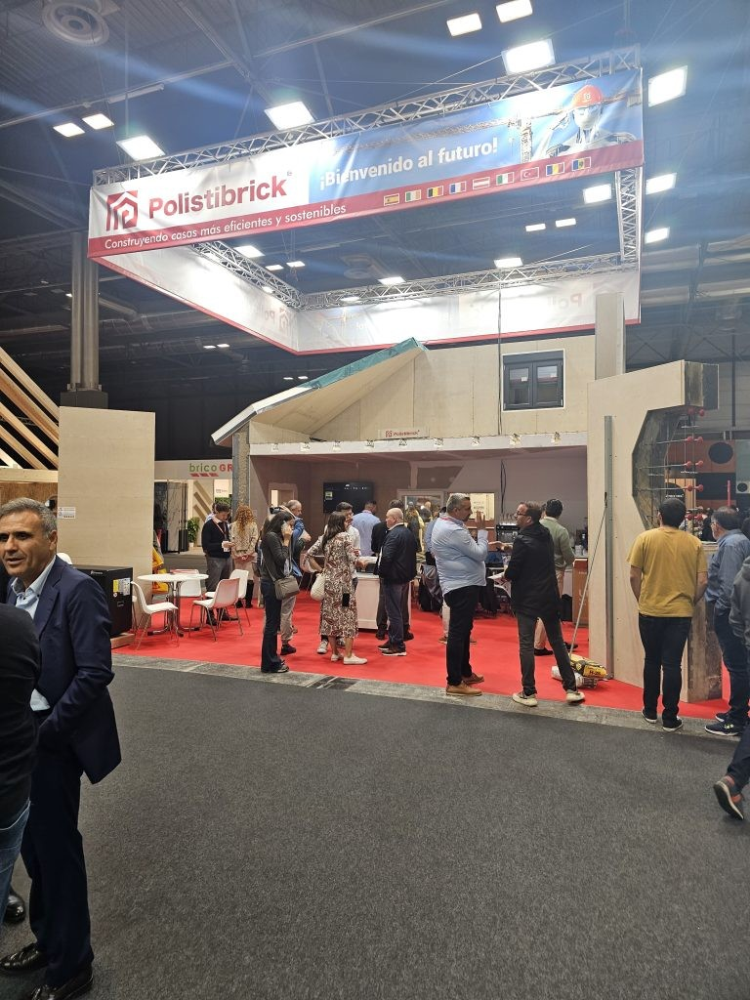

• 🧱Imaginez un système de construction qui combine rapidité, précision et efficacité énergétique dans un seul produit. Pas de tracas, pas de gaspillage de matériaux, aucune concession sur la durabilité. Ce n’est plus un rêve – c’est Polistibrick, et à Construtec 2024 – IFEMA Madrid, nous avons montré à l’Europe ce qu’il peut faire en action.
🌍 Premier contact de l’Espagne avec le système Polistibrick complet
Pour la toute première fois dans la péninsule Ibérique, nous avons dévoilé les trois innovations qui transforment radicalement notre façon de construire :
• MBK (Modular Brick Kit) – Murs modulaires avec isolation intégrée, durables, faciles à installer, parfaits pour des projets rapides et durables.
• PBK (Panel Brick Kit) – Panneaux plats pour planchers, capables de supporter des charges lourdes, résistants au temps et au climat.
• TBK (Top Brick Kit) – Solutions de toiture intelligentes, entièrement compatibles avec MBK et PBK, formant un système intégré de la fondation au toit.
🎥 Que s’est-il passé sur notre stand ?
À l’IFEMA, nous avons apporté plus que des panneaux – nous avons partagé une expérience. Les visiteurs ont assisté à :
🔧 Assemblage en direct – un mur MBK entièrement monté en quelques minutes
💡 Simulations de projets réels réalisés en Roumanie
📊 Discussions techniques sur l’efficacité énergétique, la standardisation, et la réduction des coûts jusqu’à 30 %
Les échanges avec les professionnels locaux ont confirmé que le marché ibérique est prêt pour une révolution dans la construction – et Polistibrick en fait partie.
🔗 Et ensuite ?
Notre participation à Construtec Madrid n’était qu’un début. Avec l’intérêt croissant des architectes, promoteurs et entrepreneurs espagnols, nous nous préparons à étendre nos opérations en Europe du Sud-Ouest et à établir des partenariats stratégiques pour la mise en œuvre de notre système complet.
Polistibrick – Nous ne construisons plus seulement des murs. Nous construisons le futur.